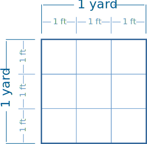

Conversion of Area
Note: you may also like Conversion Charts and the Unit Converter.
First understand Conversion of Length. If you are comfortable converting miles to kilometers, etc, then you are nearly there.
To convert area, simply remember that area is length by width:
Area = Length × Width
So we convert once for the length and once again for the width:
Just do the length conversion twice.
Example: Convert 1 square yard into square feet.
We know that three feet make a yard:
1 yd = 3 ft
So, the Length conversion is to multiply by 3
And so the Area conversion must be to multiply by 3, and multiply by 3 again.
Result is 3 × 3 = 9
There are 9 square feet in a square yard.
Count the 1 ft squares, and you will see why:

Example: Convert 30 square feet into square meters (30 ft2 to m2)
The conversion for feet to meters is:
1 ft = 0.3048 m
So the Length conversion is to multiply by 0.3048
And so the Area conversion must be to multiply by 0.3048 and multiply
by 0.3048 again:
30 × 0.3048 × 0.3048 = 2.79
So, 30 ft2 = 2.79 m2
More or Less?
Sometimes you can get the conversion the "wrong way around", so it is a good idea to think "will my answer be more or less?"
If you get the wrong answer, try dividing by the conversion number.
Example: Convert 5 square meters into square feet (5 m2 to ft2)
Will the answer be more or less than 5? Feet are smaller than meters, so there should be more square feet than square meters.
The conversion is 1 ft = 0.3048 meters
To the nearest 0.01 ft2:
- try multiplying: 5 × 0.3048 × 0.3048 = 0.46 ft2 (oops! that is smaller!)
- try dividing: 5 ÷ 0.3048 ÷ 0.3048 = 53.82 ft2 (that looks good)
Answer: 5 m2 = 5 ÷ 0.3048 ÷ 0.3048 = 53.82 ft2